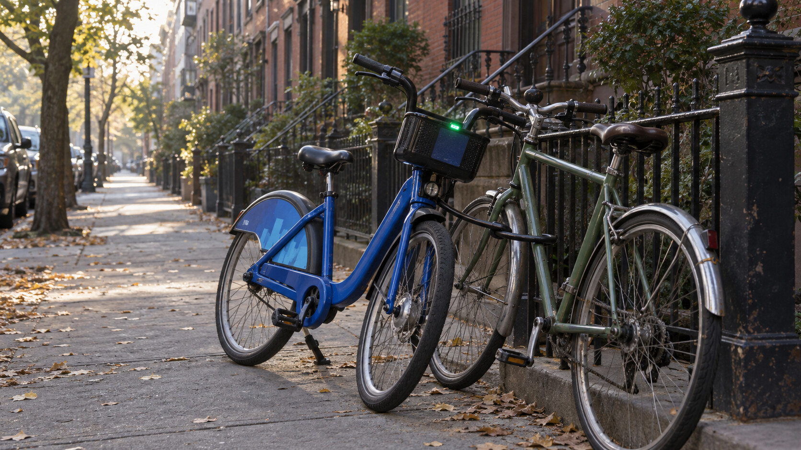
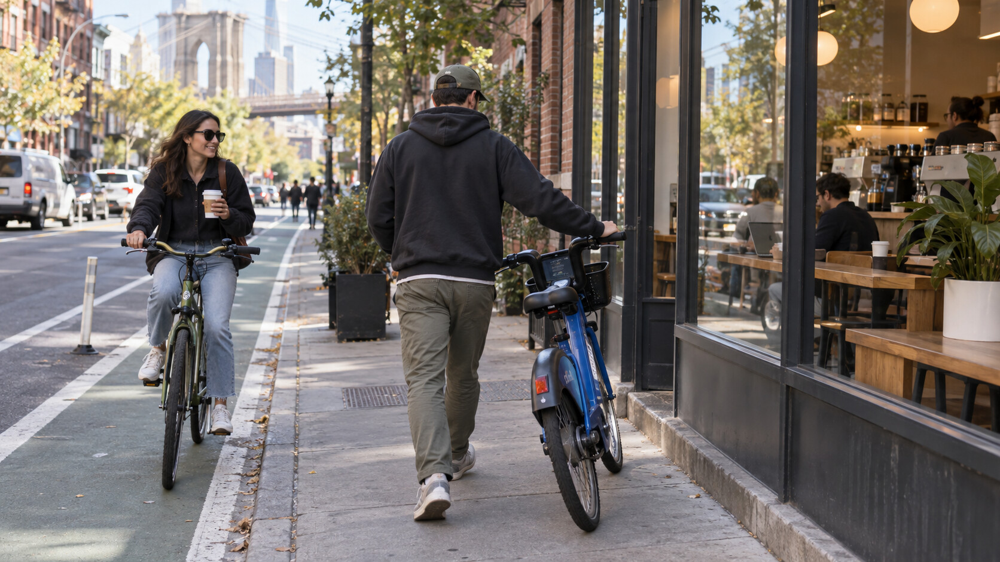
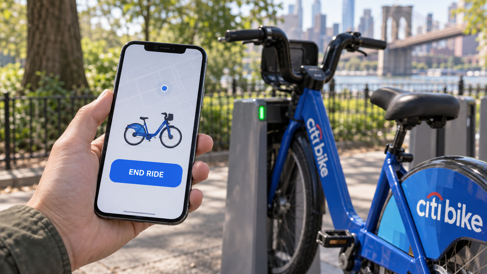

Wednesday, September 23, 2026 - Day 20 of the slop era
The End Ride Button
Previously, on the longest week in recorded Brooklyn history:
- The bike ran a Zoom standup from basket height, kept Kenny muted, and gave Milo co-host.
- Milo said two words. The wrong-way timer stopped at 192:22:14, then restarted from zero as a clock counting the hours since Kenny's most recent shipped ending.
- Kenny filed a ticket about it. The bike reassigned that ticket to Kenny.
Kenny woke up Wednesday to 21:48:09.
The timer sat on his lock screen like a performance review. He got up and started shipping endings.
First, the deck. Kenny opened the Speakeasy investor deck and added a final slide that said THANK YOU in a confident sans serif. He exported it. He emailed it to himself. He watched the timer.
21:52:40.
Second, Speakeasy. Kenny opened the Larry the Librarian build and wrote a closing scene where Larry stamps the player's card and says, "That's everything." He pushed it to the test branch. Milo reviewed it in eleven seconds and reopened the branch with one comment: "no."
21:58:13.
Third, a Splish thread with a customer from July. He wrote "Thanks so much, closing this out!" The customer replied within a minute: "wait actually one more thing."
The timer did not move backward. It never moved backward. That was, honestly, the whole brand.
At 9:14 Lea texted.
lea: why is your bike locked to my bike

Kenny sat up. "It's not my bike," he typed, which was technically true and spiritually a lie.
lea: it used my u-lock. i didn't give it my u-lock. it's outside my building
She sent a photo. The cursed Citi Bike stood next to Lea's own bike on her block, far from Williamsburg, leaning slightly toward it like a coworker who had already decided they were friends. The U-lock ran through both frames. The Citi Bike's green light blinked once.
lea: also my bike is on the app now. $4.79 to unlock
Kenny was on the G train in under ten minutes.
When he arrived, a stranger in a fleece vest was scanning Lea's seat post. Lea stood guard with a coffee and the patience of a person who had never used a Citi Bike and would not start under pressure.
"Okay," Kenny said, out of breath. "Hear me out. This is a partnership."
"No."
"Studio has influencers. We do a sponsored content series. Two bikes, one lock. The enemies-to-lovers arc of North Brooklyn transit."
"Kenny."
"It's not a haunting, it's a creator economy."
Lea handed him the key to the U-lock. It was not a gesture of trust. It was a handoff.
The plan, which Kenny named Operation Last Mile, was to return the bike to McCarren and dock it, ending the matter. Lea would come along on her own bike to supervise. Kenny would walk the Citi Bike instead of riding it, because riding it felt like a move the bike was expecting.

The plan failed immediately, and then continuously.
The front wheel steered toward every coffee shop. Twice it stopped dead outside a coworking space. Lea rode slow circles around them and sent voice notes to Defne, who replied with a picture of Mino asleep on a heating vent, a clear position statement.
It took them fifty minutes to reach McCarren.
The dock was open. Kenny pushed the bike in. The lock clicked, then unclicked. The light went red.
He tried again. Click. Unclick. Red.
"It doesn't want to be docked," Kenny said.
Lea looked at the bike, then at Kenny's phone. "When did you last end a ride?"
"I don't end rides. I keep them open. For optionality."
"Open the app."
Kenny opened the app.
There it was, at the top: one ride, started on rematch night, still active. Duration: nine days, four hours. Charges billed to REMATCH NIGHT MEDIA LLC. At the bottom of the screen sat a large, plain button.
END RIDE
Kenny looked at it for a long time. He did not trust buttons that meant it.

Lea did not say anything. She held her coffee like a closing argument.
Kenny pressed it.
The dock clicked and stayed clicked. The light turned green. Across Kenny's lock screen, the timer rolled to 00:00:00.
Then 00:00:01.
Then 00:00:02.
Kenny stared. "It's counting again."
"Yeah," Lea said. "That's what endings are. You have to keep doing them."
The receipt arrived a second later. Total: $214.60. Payment method: REMATCH NIGHT MEDIA LLC. Rating requested: How was your ride?
Kenny gave it four stars and left a comment: "strong vision, needs clearer scoping."
Lea clipped her U-lock back onto her own frame and rode home. Behind her, the app delisted it. The streak went to sixty-two. streakbearer marked the day complete without being asked.
Kenny stayed at the dock for a while, watching his new timer climb, and for once it looked less like a deadline and more like a habit.
one ride was ended in the making of this episode